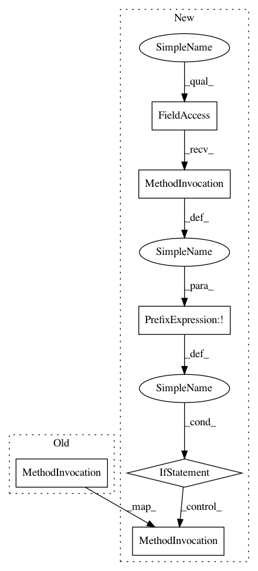

4737b92f63170d4d27a1335908995827a501c1df,pyntcloud/learn/datasets/modelnet.py,,get_and_setup_modelnet,#,54
Before Change
print(f"Downloading ModelNet")
urllib.request.urlretrieve(MODELNET_URLS[N], zip_file)
os.makedirs(extract_folder)
print("Unzipping ModelNet")
with zipfile.ZipFile(zip_file) as zf:
zf.extractall(extract_folder)
After Change
print(f"Downloading ModelNet{N}")
urllib.request.urlretrieve(MODELNET_URLS[N], zip_file)
if not os.path.exists(extract_folder):
os.makedirs(extract_folder)
print("Unzipping ModelNet")
with zipfile.ZipFile(zip_file) as zf:
zf.extractall(extract_folder)
print("Removing __MACOSX")
// Thanks, Steve Jobs
try:
rmtree(f"{extract_folder}/__MACOSX")
In pattern: SUPERPATTERN
Frequency: 1
Non-data size: 6
Instances
Project Name: daavoo/pyntcloud
Commit Name: 4737b92f63170d4d27a1335908995827a501c1df
Time: 2017-05-08
Author: daviddelaiglesiacastro@gmail.com
File Name: pyntcloud/learn/datasets/modelnet.py
Class Name:
Method Name: get_and_setup_modelnet